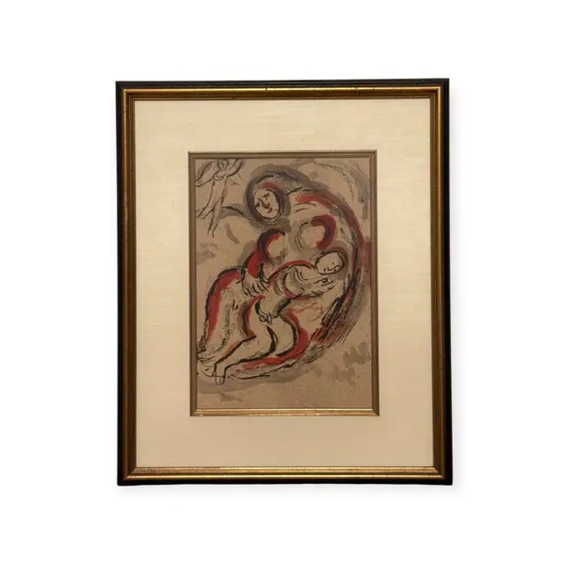
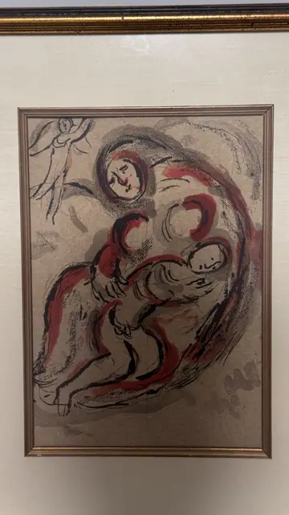

Paintings & Prints
Modernist Lithograph of Mother and Child with Angel, Framed
· mid 20th century
Price Upon Request


About the Item
A colour lithograph drawn in sweeping black and vermilion crayon lines over a warm grey-taupe ground. A woman with a red-haloed head bends over a sleeping child held across her lap, the pair described almost entirely by looping contour lines with red hatching filling the folds of her robe, her bare feet and hands left as pale outlined shapes. In the upper left a small winged angel in red and black dives towards them, and loose scribbled strokes suggest a landscape behind. The mark-making is fast and calligraphic and the paper tone is left to do most of the work. Framed with a gold fillet, cream linen mat, black-and-gilt moulding under glass. Medium: colour lithograph. Condition: Clean and bright with no foxing or cockling visible; margins hidden under the fillet. Some glare on the glass.
Details
- Creation Year:
- mid 20th century
- Dimensions:
- Height: 21.25 in (53.98 cm)
Width: 18.0 in (45.72 cm)
outside of frame - Medium:
- colour lithograph
- Period:
- 20Th
- Condition:
- Offered in the condition shown in the photographs.
- Reference Number:
- VO-152
- Documentation:
- no certificate photographed